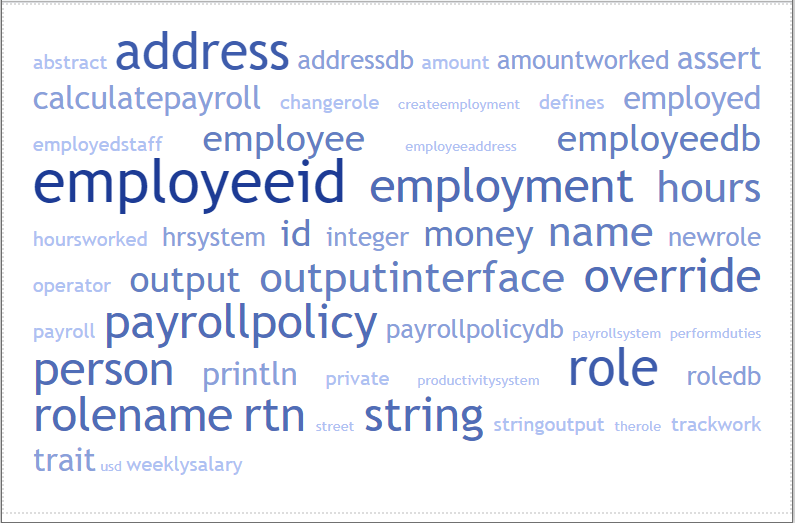

Components in EK9
Components go beyond Composition by adding more structural constructs that can be injected. Adding components is only really valuable once the scale of the software gets to a 'reasonable' size.
Before showing this example source code, it might be worth taking a look at this 'tag cloud', just to see if you can quickly understand what the example is about.
This site has wandered off from just giving details into EK9 syntax and has started to discuss design. That's because these additional constructs are all about design, architecture and software engineering.
TAG Cloud
Reason the TAG Cloud was shown first
There is a point to showing the TAG cloud. That is to emphasize the value of strong typing; not just to ensure code reliability and reduce the chance of passing invalid parameters. The value is first and foremost for the human reader. This point tends to be lost in many programming languages. Just being able to write very short, terse and in some cases obfuscated code; might reduce keystrokes, but can make it hard to understand the main reason for the code.
While it's true to say you can see 'string', 'private' and 'println'. The main content is that of the problem domain. Meaningful names that should leap out and inform you with a single glimpse that this example is all about business, work, employees and salaries.
This is the real value of creating strong types, traits and well named abstractions. Not just because it makes your code more flexible, safer, extensible and testable. You instantly get a mile high overview of the code that is about to follow.
To demonstrate the use of components it has been necessary to add quite a bit more functionality to the example from composition. It has also been assumed that the software being developed has to be very extensible. The example that follows accomplishes this by enabling many of the classes and components to be replaceable. For a real development, it would probably not be wise to make every single part of a solution replaceable as this can lead to naming 'overload'.
There is an important point here that should be highlighted. Whilst abstractions do provide value, they also increase cognitive load. The very fact the developer has to dereference types and work in a more abstract manner; increases the load for that developer.
Composition background
It is only when software gets quite a lot larger than this, and needs to be much more flexible, that components/applications start to become really useful.
There are other aspects to note about this code (check and compare the code from composition).
- Employment IDs are now strongly typed
- Amount worked is typed as a Duration and converted to hours when needed
- The type 'Name' is constrained to match a regular expression
- The type of 'role' has been migrated from just String values to an Enumeration and called 'RoleName'
- The 'I' has been dropped from traits
- Each part of the 'data store' has been modelled as a 'DB' trait to enable alternative implementations
- 'Role', 'PayrollPolicy' and 'PayrollPolicy' and subclasses have only had minor changes
- 'Employee' has been pulled apart! Now 'Person', 'Employee' and 'Employment' are used in composition
- The employee data, role data, address data and salary policies have all been pulled into separate 'in memory databases'
- 'EmployeeDatabase' has been replaced by 'InMemoryEmployeeDB'
Other simplifications.
- 'ProductivitySystem' only tracks amounts worked
- 'PayrollSystem' only calculates payroll
- Several large methods have been decomposed
Components
The new items that have been added are components and applications.
- Use of 'Stdout' being hardwired has been replaced by using an 'OutputInterface' component
- There are two concrete implementations of this 'OutputInterface'
- The concept of an 'HRSystem' has been introduced in abstract form
- A 'SimpleHRSystem' concrete implementation has been provided
- The 'EmployeeDB' the 'SimpleHRSystem' has to use is provided at construction (inversion of control)
- Business level type methods have been provided in the 'HRSystem' and the 'OutputInterface' is provided for output
Application
A 'DemoApp' has been created, and this only focuses on the 'wiring' of what classes and components should be used in combination. If you've used 'Spring' this is similar to that wiring. The intention in EK9 is however to keep that wiring to a minimum and only inject at the highest level. Which is why only components can be injected and classes cannot. By constraining and limiting components to being vessels for composition and not as flexible/useful as classes, and not allowing classes to be injected; EK9 reduces the opportunities to 'abuse' Dependency Injection.
Typically; you should inject 'Factories', 'Strategies' and other major large sub systems (like the 'HRSystem' for example). Also try to keep that injection as high in the code structure as possible. Low utility functions/classes should really have 'items' passed in at construction or on method calls. Injecting everywhere; will make your code less reusable/testable and harder to refactor.
The Program
Finally (the point of all this), unlike the original program; where it not only had the business logic of what to do, but also decided on what parts would be used to accomplish that business logic. This new program only decides on the use of 'DemoApp' (abstraction), but is unlinked from the implementation details of what will be plugged in where.
The key point here is that the program 'Demonstration' has 'HRSystem' and 'OutputInterface' injected. The program then only needs to focus on the business logic.
This approach is typical when employing the 'Single Responsibility Principle'. The example code is a little longer now, but much clearer in terms of types and what functionality is implemented by which component.
#!ek9
defines module introduction
defines type
EmployeeId as Integer constrain
> 0
Name as String constrain as
matches /^[a-zA-Z -]+$/
RoleName
manager
secretary
sales
factory
defines record
Address
street <- String()
street2 <- String()
city <- String()
state <- String()
zipcode <- String()
operator ? as pure
<- rtn as Boolean: street? and city? and state? and zipcode?
operator $ as pure
<- rtn as String: ""
rtn += street
if street2?
rtn += "\n" + street2
rtn += "\n" + city + " " + state+ " " + zipcode
defines trait
Role
performDuties()
-> hours as Integer
<- activity as String?
operator ? as pure
<- rtn as Boolean: true
PayrollCalculator
resetHoursWorked()
trackWork()
-> hours as Integer
calculatePayroll()
<- amount as Money?
operator ? as pure
<- rtn as Boolean?
RoleDB
findRole()
-> roleName as RoleName
<- rtn as Role?
AddressDB
findEmployeeAddress()
-> employeeId as EmployeeId
<- rtn as Address?
addEmployeeAddress()
->
employeeId as EmployeeId
address as Address
PayrollPolicyDB
findPayrollPolicy()
-> employeeId as EmployeeId
<- rtn as PayrollPolicy?
addPayrollPolicy()
->
employeeId as EmployeeId
payrollPolicy as PayrollPolicy
EmployeeDB
employed()
<- employedStaff as List of Employment?
changeRole()
->
employeeId as EmployeeId
newRole as RoleName
addEmployee()
->
person as Person
role as RoleName
payrollPolicy as PayrollPolicy
defines class
PayrollPolicy with trait of PayrollCalculator as abstract
hoursWorked <- 0
override resetHoursWorked()
hoursWorked = 0
override trackWork()
-> hours as Integer
hoursWorked += hours
hoursWorked()
<- hours as Integer: hoursWorked
override operator ? as pure
<- rtn as Boolean: hoursWorked?
HourlyPolicy extends PayrollPolicy
hourRate <- Money()
HourlyPolicy()
-> hourRate as Money
this.hourRate = hourRate
override calculatePayroll()
<- amount as Money: hourRate * hoursWorked()
SalaryPolicy extends PayrollPolicy as open
weeklySalary <- Money()
SalaryPolicy()
-> weeklySalary as Money
this.weeklySalary = weeklySalary
override calculatePayroll()
<- amount as Money: weeklySalary
CommissionPolicy extends SalaryPolicy
commissionPerSale <- Money()
CommissionPolicy()
->
weeklySalary as Money
commissionPerSale as Money
super(weeklySalary)
this.commissionPerSale = commissionPerSale
override calculatePayroll()
<- amount as Money: super.calculatePayroll() + commission()
private commission()
<- amount as Money: commissionPerSale/5.0 * hoursWorked()
ManagerRole with trait of Role
override performDuties()
-> hours as Integer
<- activity as String: "screams and yells for " + $hours + " hours."
SecretaryRole with trait of Role
override performDuties()
-> hours as Integer
<- activity as String: "does paperwork for " + $hours + " hours."
SalesRole with trait of Role
override performDuties()
-> hours as Integer
<- activity as String: "expends " + $hours + " hours on the phone."
FactoryRole with trait of Role
override performDuties()
-> hours as Integer
<- activity as String: "manufactures gadgets for " + $hours + " hours."
Person
name <- Name()
address <- Address()
Person()
->
name as Name
address as Address
this.name: name
this.address: address
name()
<- rtn as Name: name
address()
<- rtn as Address: address
operator ? as pure
<- rtn as Boolean: name? and address?
operator $ as pure
<- rtn as String: name
Employee
id <- EmployeeId()
person <- Person()
Employee()
->
id as EmployeeId
person as Person
assert id? and person?
this.id: id
this.person: person
id()
<- rtn as EmployeeId: id
person()
<- rtn as Person: person
operator ? as pure
<- rtn as Boolean: id? and person?
operator $ as pure
<- rtn as String: $id + " - " + $person
Employment with trait of Role by role, PayrollCalculator by payroll
employee <- Employee()
role as Role?
payroll as PayrollCalculator?
Employment()
->
employee as Employee
role as Role
payroll as PayrollCalculator
assert employee? and role? and payroll?
this.employee: employee
this.role: role
this.payroll: payroll
changeRole()
-> newRole as Role
role: newRole
work()
-> amountWorked as Duration
<- dutiesPerformed as String: String()
//Note that duration is converted to hours from this point on.
assert amountWorked.hours() >= 0
dutiesPerformed: performDuties(amountWorked.hours())
payroll.trackWork(amountWorked.hours())
employeeAddress()
<- rtn as Address: employee.person().address()
employee()
<- rtn as Employee: employee
override operator ? as pure
<- rtn as Boolean: role? and payroll?
operator $ as pure
<- rtn as String: $employee
InMemoryRoleDB with trait of RoleDB
roles as Dict of (RoleName, Role): {
RoleName.manager: ManagerRole(),
RoleName.secretary: SecretaryRole(),
RoleName.sales: SalesRole(),
RoleName.factory: FactoryRole()
}
override findRole()
-> roleName as RoleName
<- rtn as Role?
theRole <- roles.get(roleName)
assert theRole?
rtn: theRole.get()
InMemoryAddressDB with trait of AddressDB
employeeAddresses as Dict of (EmployeeId, Address): {
EmployeeId(1): Address("121 Admin Rd.", String(), "Concord", "NH", "03301"),
EmployeeId(2): Address("67 Paperwork Ave", String(), "Manchester", "NH", "03101"),
EmployeeId(3): Address("15 Rose St", "Apt. B-1", "Concord", "NH", "03301"),
EmployeeId(4): Address("39 Sole St.", String(), "Concord", "NH", "03301"),
EmployeeId(5): Address("99 Mountain Rd.", String(), "Concord", "NH", "03301")
}
override findEmployeeAddress()
-> employeeId as EmployeeId
<- rtn as Address: Address()
address <- employeeAddresses.get(employeeId)
assert address?
rtn: address.get()
override addEmployeeAddress()
->
employeeId as EmployeeId
address as Address
employeeAddresses += DictEntry(employeeId, address)
InMemoryPayrollPolicyDB with trait of PayrollPolicyDB
employeePayrollPolicies as Dict of (EmployeeId, PayrollPolicy): {
EmployeeId(1): SalaryPolicy(3000#USD),
EmployeeId(2): SalaryPolicy(1500#USD),
EmployeeId(3): CommissionPolicy(1000#USD, 100#USD),
EmployeeId(4): HourlyPolicy(15#USD),
EmployeeId(5): HourlyPolicy(9#USD)
}
override findPayrollPolicy()
-> employeeId as EmployeeId
<- rtn as PayrollPolicy?
policy <- employeePayrollPolicies.get(employeeId)
assert policy?
rtn: policy.get()
override addPayrollPolicy()
->
employeeId as EmployeeId
payrollPolicy as PayrollPolicy
employeePayrollPolicies += DictEntry(employeeId, payrollPolicy)
InMemoryEmployeeDB with trait of EmployeeDB, RoleDB by roleDB, AddressDB by addressDB, PayrollPolicyDB by payrollPolicyDB
roleDB as RoleDB?
addressDB as AddressDB?
payrollPolicyDB as PayrollPolicyDB?
employedStaff as Dict of (EmployeeId, Employment): Dict()
nextEmployeeId as EmployeeId: EmployeeId(6)
private InMemoryEmployeeDB()
assert not true
InMemoryEmployeeDB()
->
roleDB as RoleDB
addressDB as AddressDB
payrollPolicyDB as PayrollPolicyDB
this.roleDB: roleDB
this.addressDB: addressDB
this.payrollPolicyDB: payrollPolicyDB
populateEmployedStaff()
private populateEmployedStaff()
createEmployment(EmployeeId(1), Name("Mary Poppins"), RoleName.manager)
createEmployment(EmployeeId(2), Name("John Smith"), RoleName.secretary)
createEmployment(EmployeeId(3), Name("Kevin Bacon"), RoleName.sales)
createEmployment(EmployeeId(4), Name("Jane Doe"), RoleName.factory)
createEmployment(EmployeeId(5), Name("Robin Williams"), RoleName.secretary)
override employed()
<- staff as List of Employment: List()
values <- this.employedStaff.values()
cat values > staff
override changeRole()
->
employeeId as EmployeeId
newRole as RoleName
employment <- this.employedStaff.get(employeeId)
role <- findRole(newRole)
assert employment? and role?
employment.get().changeRole(role)
override addEmployee()
->
person as Person
role as RoleName
payrollPolicy as PayrollPolicy
newEmployeeId <- nextEmployeeId()
addEmployeeAddress(newEmployeeId, person.address())
addPayrollPolicy(newEmployeeId, payrollPolicy)
employment <- Employment(Employee(newEmployeeId, person), findRole(role), payrollPolicy)
addEmployment(employment)
private nextEmployeeId()
<- id as EmployeeId: EmployeeId()
id :=: nextEmployeeId
nextEmployeeId++
private createEmployment()
->
id as EmployeeId
name as Name
theRole as RoleName
address <- findEmployeeAddress(id)
employeeRole <- findRole(theRole)
payrollPolicy <- findPayrollPolicy(id)
addEmployment(Employment(Employee(id, Person(name, address)), employeeRole, payrollPolicy))
private addEmployment()
-> employment as Employment
employedStaff += DictEntry(employment.employee().id(), employment)
ProductivitySystem with trait of StringOutput by output
output as StringOutput?
private ProductivitySystem()
assert not true
ProductivitySystem()
-> output as StringOutput
this.output: output
track()
->
employed as List of Employment
amountWorked as Duration
println("Tracking Employee Productivity")
println("==============================")
for employment in employed
dutiesPerformed <- employment.work(amountWorked)
println("Employee " + $employment + ": ")
println(" - " + dutiesPerformed)
println("")
println("")
PayrollSystem with trait of StringOutput by output
output as StringOutput?
private PayrollSystem()
assert not true
PayrollSystem()
-> output as StringOutput
this.output: output
calculatePayroll()
-> employed as List of Employment
println("Calculating Payroll")
println("===================")
for employment in employed
println("Payroll for: " + $employment)
println("- Check amount: " + $employment.calculatePayroll())
if employment.employeeAddress()?
println("- Sent to:")
println($employment.employeeAddress())
println("")
defines component
OutputInterface as abstract
output()
<- outputTo as StringOutput: Stdout()
StdoutInterface is OutputInterface
StderrInterface is OutputInterface
override output()
<- outputTo as StringOutput: Stderr()
HRSystem as abstract
newWorkingWeek() as abstract
calculatePayroll() as abstract
-> outputInterface as OutputInterface
trackWork() as abstract
->
outputInterface as OutputInterface
amountWorked as Duration
changeRole() as abstract
->
employeeId as EmployeeId
newRole as RoleName
newStarter() as abstract
->
person as Person
role as RoleName
payrollPolicy as PayrollPolicy
SimpleHRSystem is HRSystem
employeeDb as EmployeeDB?
SimpleHRSystem()
assert not true
SimpleHRSystem()
-> employeeDb as EmployeeDB
this.employeeDb: employeeDb
override newWorkingWeek()
employed <- employeeDb.employed()
for employment in employed
employment.resetHoursWorked()
override calculatePayroll()
-> outputInterface as OutputInterface
payrollSystem <- PayrollSystem(outputInterface.output())
payrollSystem.calculatePayroll(employeeDb.employed())
override trackWork()
->
outputInterface as OutputInterface
amountWorked as Duration
productivitySystem <- ProductivitySystem(outputInterface.output())
productivitySystem.track(employeeDb.employed(), amountWorked)
override changeRole()
->
employeeId as EmployeeId
newRole as RoleName
assert employeeId? and newRole?
employeeDb.changeRole(employeeId, newRole)
override newStarter()
->
person as Person
role as RoleName
payrollPolicy as PayrollPolicy
assert person? and role? and payrollPolicy?
employeeDb.addEmployee(person, role, payrollPolicy)
defines application
//Separation of what components/classes to use rather than what to do with them
DemoApp
employeeDb <- InMemoryEmployeeDB(InMemoryRoleDB(), InMemoryAddressDB(), InMemoryPayrollPolicyDB())
register SimpleHRSystem(employeeDb) as HRSystem
register StdoutInterface() as OutputInterface
defines program
//Separation of what functionality to provide with configuration supplied.
Demonstration() with application of DemoApp
hrSystem as HRSystem!
outputInterface as OutputInterface!
hrSystem.trackWork(outputInterface, PT40H)
hrSystem.calculatePayroll(outputInterface)
hrSystem.newWorkingWeek()
//Short week.
hrSystem.trackWork(outputInterface, PT32H)
hrSystem.calculatePayroll(outputInterface)
//EOF
There is some additional functionality in the example above, but the main point has been to make the whole system very pluggable. Some developers may start to consider this 'over engineering'. This would depend on how large or long this software is intended to last.
You can start to see two parallel tracks going on here, the first is the abstract nature (designing with interfaces/traits); then there are the concrete implementations of those interfaces/traits. The important part in this is that there is decoupling everywhere.
This decoupling is not without its downside, deep inside a method the code/developer will only 'know' that they have some type of object that conforms to an interface/trait. But that's the point! NO you cannot 'cast' it or use instanceof; those concepts to not exist. But you could use a dispatcher method.
Discussion
While some new functionality has been added, there is a significant amount more code over the previous example. This is mainly in defining the traits and also separating out Single Points of Responsibility. The additional strong typing of 'role name' 'employee id' and 'name' also adds to the increased size.
But look at the 'tag cloud' again, there is value here. As a contrast; it is technically possible to hold the 'Address' as just a 'List of String'. But that's it; it is then only a 'List of String', it has not been abstracted into anything meaningful in the problem domain.
EK9 provides the constructs and mechanisms to be able to code in a very abstract manner with lots of decoupling; or in a very basic manner. Depending on your project/product, its lifetime, use, size and your teams experience you'll have to find the right blend of abstraction.
Summary
While components seem a bit limited in comparison to classes and even traits, this is by design. They are designed to act as an enabler for more functionality in terms of Dependency Injection and Aspect Oriented Programming.
These additional topics are getting much more advanced and have very limited and finite roles to play. But when you need to deal with many crosscutting concerns; components can be employed.
Some architects/developers value AOP and others believe it adds complexity and makes code more fragile. EK9 includes a very simple version of AOP that just gives the developer coarse grain knowledge that a specific method on a component was called.
There is no fine-grained access to enable the selection specific methods of specific names (that is too fragile and breaks when code is refactored). Use AOP with care. If fine-grained detail is needed then classes and traits with composition and delegation is the way to go.
Next Steps
Continuing with components but adding Dependency Injection and Aspect Oriented Programming is the next logical step in terms of architectural macrostructure in software.